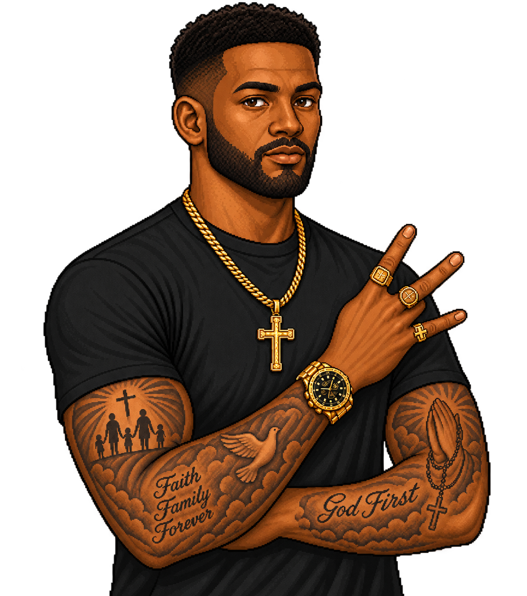

Áttekintés
A 11 tagú csapat mai állapota — valós adatokkal ott, ahol van; őszinte "nincs naplózva" mindenhol máshol.
Aktív ügynökök ma
5
10 specialista összesen
Ma futott dispatch
26
62 naplózott dispatch összesen
Token napló
4.74M
6/10 tagnál van adat
Audit register
38/52
lezárt tétel
Csapat
jelentési hierarchiaGaz
Engineering Lead
Yara
Technology Strategist

Bjorn
Detection Quality Engineer

Jamal
DevOps Engineer
Kai
Platform Engineer

Sienna
Frontend Engineer
Yuki
Detection Engineer

Kwame
Compliance Analyst

Masha
Threat Intelligence Analyst
Priya
Application Security Engineer

Chloe
Technical Writer
Stratégiai/vezetői szint
Stratégiai szint
Mérnöki/technológiai szint
Csoportkoordinátor
Compliance/dokumentációs szint
jelentési vonal
Aktivitás
Commit-előzmény ehhez a repo-hoz, frissen a git log-ból generálva.
Aktivitás
git log, frissdocs(readme): left-align logo, shrink tagline under title
docs(readme): simplify header to stacked logo + real h1 title
docs(readme): increase logo size for better visibility
docs(readme): add line break for improved layout
docs(readme): adjust icon sizes for Architecture and Wiki sections
docs(readme): update Team Ops Dashboard icon and adjust sizes for other icons
docs(readme): add team.png icon to the Team Ops Dashboard row
docs(readme): update icon sizes for Rule Browser, MITRE Navigator, and Dashboards
docs(readme): link the live team-ops dashboard from Live views
docs(readme): rebalance Reference docs icon sizes
docs(readme): custom icons for the Reference docs table
fix(readme): remove unnecessary line breaks for cleaner formatting
docs(readme): bigger title, bigger icons, split Live views columns
docs(readme): bigger title, separated tagline, more spacing, bigger icons
docs(readme): custom icons for the Live views table rows
refactor(assets): consolidate all repo images into docs/pictures/
fix(rule-browser): widen Verdict column to fit scope/due/drift badge
ci: regenerate team-ops dashboard before Pages publish
feat(dashboard): publish team-ops dashboard to GitHub Pages
docs(readme): drop table wrapper, use float layout for header
Merge remote-tracking branch 'origin/dev' into dev
docs(readme): lay out logo and title side by side in header
chore(docs): regenerate Console and stats [skip ci]
Merge pull request #64 from martonbence/dependabot/pip/dot-github/dev/dev-tooling-b1e9581fbb
fix(dashboard): satisfy ruff 0.16.4 lint rules in generate_dashboard.py
docs(architecture): rename workflow diagram box titles for consistency
chore(deps-dev): bump ruff in /.github in the dev-tooling group
fix(docs): link Workflow diagram straight to raw.githubusercontent.com
fix(docs): link Workflow diagram straight to raw content, not the blob viewer
fix(docs): use relative link for Workflow diagram, not hardcoded main branch
docs: embed Workflow diagram in README, add source SVG to repo
feat(docs): enhance README with redesigned quick-links and Mermaid diagrams for improved clarity
docs: update README to remove outdated testing scope and verification details
chore(ops): log agent dispatch usage for the dashboard-rename/README session
docs: redesign README header — new motto, repositioned stats, expanded quick-links
feat(stats): recompose README badge row, add MITRE coverage, fix #navigator anchors
refactor(dashboard): rename dashboard.html output to team-ops.html
docs(ops): narrow Bjorn's review gate to functional changes; sync rename refs
docs: rewrite README as a general, high-level project overview
chore(ops): log agent dispatch usage for 2026-08-25 sessions
Token Monitor
Naplózott dispatch-ek tagonként, a .claude/agent_usage_log.jsonl naplóból. A vizualizáció designja később készül el.
| Tag | Szerep | Dispatch | Token | Tool use | Idő | Utolsó |
|---|---|---|---|---|---|---|
| Yara | Technology Strategist | nincs naplózott munka | ||||
| Kwame | Compliance Analyst | 6 | 651.9K | 256 | 30m | 2026-08-24 |
| Masha | Threat Intelligence Analyst | nincs naplózott munka | ||||
| Yuki | Detection Engineer | nincs naplózott munka | ||||
| Bjorn | Detection Quality Engineer | 6 | 379.5K | 112 | 16m | 2026-08-28 |
| Chloe | Technical Writer | 20 | 622.5K | 107 | 17m | 2026-08-28 |
| Jamal | DevOps Engineer | 8 | 1.12M | 377 | 1.0h | 2026-08-28 |
| Sienna | Frontend Engineer | 17 | 1.70M | 499 | 1.7h | 2026-08-28 |
| Kai | Platform Engineer | 5 | 264.1K | 46 | 6m | 2026-08-28 |
| Priya | Application Security Engineer | nincs naplózott munka | ||||
Ügynökök
Részletes ügynök-lista és állapotfigyelés -- ha lesz rá valós igény.
Még nincs megvalósítva.
Csapat
Mélyebb csapat-nézet -- egyelőre az áttekintő oldal Csapat panelje adja ezt.
Még nincs megvalósítva.
Skillek
A .claude/skills/ tartalmának áttekintése.
Még nincs megvalósítva.
MCP
A konfigurált MCP szerverek állapota.
Még nincs megvalósítva.